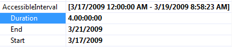

Introduction
| RELATED VIDEOS | |
| [Codeless Data Binding with RadScheduler for WinForms](http://tv.telerik.com/winforms/radscheduler/codeless-data-binding-with-radscheduler-winforms) In this video, you will learn how to use the SchedulerBindingDataSource with the RadScheduler for WinForms to quickly and codelessly data bind a RadScheduler. You will also be introduced to the RadSchedulerNavigator, a simple control that makes it easy for users navigate a RadScheduler. (Runtime: 07:04) |  |
| [Introduction to RadScheduler for WinForms](http://tv.telerik.com/winforms/radscheduler/introduction-radscheduler-winforms) In this webinar, Telerik Developer Support Specialist Robert Shoemate will introduce RadScheduler and demonstrate how to utilize its powerful feature set in your own applications. By attending this webinar, you will learn about features such as codeless data binding, adding custom fields, and UI customization. (Runtime: 55:58) |  |
| RELATED BLOGS |
| Data Binding with RadScheduler for WinForms RadScheduler for WinForms is highly customizable component that offers functionality similar to that of the Calendar included with MS Outlook. When working with RadScheduler, developers can easily bind data sources directly to it using an instance of SchedulerBindingDataSource. The provided data source can be in the form of a database or business objects. The only requirement is that the data source must conform to a specific structure and provide specific fields. [Read full post ...](http://blogs.telerik.com/winformsteam/posts/10-04-01/data_binding_with_radscheduler_for_winforms.aspx) |
| RadScheduler for WinForms data binding and occurrence exceptions The big [new] feature for Q3 2009 release in RadScheduler for WinForms has got to be the resource grouping functionality. There are, however, numerous other improvements that also deserve attention, such as data binding. Some of you may remember that in its first release the WinForms Scheduler had just basic support for binding to appointment data. Later we extended this functionality to support storing associations to resources in the data source. [Read full post ...](http://blogs.telerik.com/winformsteam/posts/09-11-04/radscheduler-for-winforms-data-binding-and-occurrence-exceptions.aspx) |
RadScheduler uses a data source provider model for data binding that targets
highly customizable information storage and retrieval. For example, the
information that defines the events has an obligatory part - a subject, a start
time, and an end time entries, and customizable properties like recurrence
rule, location, etc. It can also include fields for any custom resources and
attributes you want to include. If you are including custom properties, you
must map them to scheduler properties using the
SchedulerMapping class. You can also bind the scheduler to a
data source using a specific SchedulerDataSource (like the
SchedulerBindingDataSource).
The most important property aside from those dealing with data binding is
ActiveViewType which can be Day,
MultiDay, Week, WorkWeek or
Month. Like RadCalendar, the FocusedDate is a
DateTime that determines the visible day, week or month currently displayed in
the scheduler.
Here are some of the other helpful properties that can be set at design
time:
- AccessibleInterval is a the duration of time that the user is allowed to use. 
The active
view cannot be changed if the new view is not in the accessible
interval.
AppointmentTitleFormat is fed to a String.Format()
call and supplies parameters for Start, End, Subject and Location in
that order. So for example you could assign a string with a format like
this:
Starts: {0}
Ends: {1} Subject: {2} Location: {3}AllowAppointmentMove and
AllowAppointmentResize control if the user can drag or
resize an appointment at runtime.To toggle visibility of appointment status, all day appointment status
and navigation elements use the ShowAppointmentStatus,
ShowAllDayAppointmentStatus and
ShowNavigationElements properties.